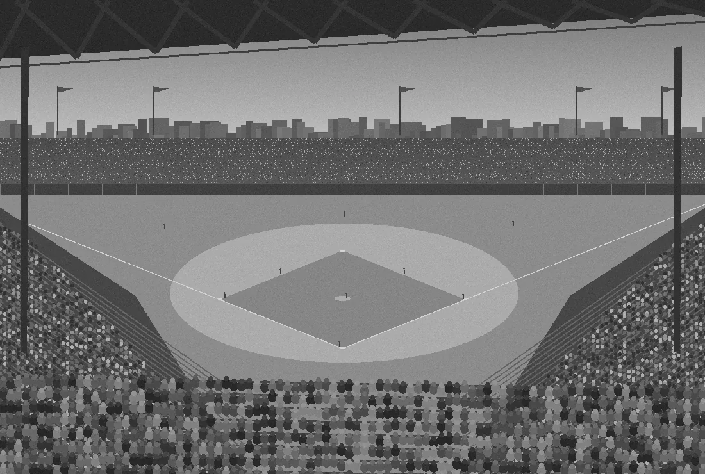

Kuvaessee / Baseball
Katsomo ennen meitä
Yksi valokuva New Yorkista vuodelta 1913. Mitä baseballista jää näkyviin, kun katse siirtyy kentältä katsomoon?
Päädyn demotoimitus · 15.11.2026Lue kuvaessee →

Yksi valokuva New Yorkista vuodelta 1913. Mitä baseballista jää näkyviin, kun katse siirtyy kentältä katsomoon?
Bucknerin jalkojen välistä mennyt pallo päätti kuudennen ottelun ja venytti finaalisarjan seitsemänteen peliin.